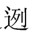

季茀君监：得十一月望简毕，甚以说释。闻北方土地多滒淖[61]，而越中亦迷阳[62]遍地，不可以行。明年以后，子英欲设二监学，分治内外。发电以后，更令仆作函招致。顾速君来越，意所不欲。然以自为监学，不得显语，则聊作数言而不坚切。此函意已先达左右。仆归里以来，经二大涛[63]，幸不颠陨，顾防守攻战，心力颇瘁。今事已了，正可整治，而子英渐已孤行其意。至于明年，恐或莫可收拾。于是仆亦决言不治明年之事。惟此监学一职，未得继者，甚以为难。与子英共事，助之往往可气，舍之又复可怜，左右思惟，不知所可。君倘来此，当亦如斯。惟仆于子英谊亦朋友，故前不驰书相阻，今既谢绝，可明告矣。越中理事，难于杭州。技俩奇觚[64]，鬼蜮退舍。近读史数册，见会稽往往出奇士，今何不然？甚可悼叹！上自士大夫，下至台隶，居心卑险，不可施救，神赫斯怒[65]，湮以洪水可也。无趾之书[66]，已译有法人某之《比较文章史》[67]，又有Mechinicoff之《人性论》[68]，余均未详。君书咸存起孟处，价亦月拂不懈，力尚能及，可不必寄与也。吾乡书肆，几于绝无古书，中国文章，其将殒落。闻北京琉璃厂颇有典籍，想当如是，曾一览否？李长吉[69]诗集除王琦注本外，当有别本，北京可能蒐得。如有而直不昂，希为致一二种。倘见协和，望代存问，旧友云散，恨何可言？君此后与俅男[70]语或通讯时，宜少憼，彼喜昭告于人，以鸣得意。斯人与奡头[71]同在以斧斯之之

[72]者也。此地已寒，北京当更甚。校课竣后，尚希以简毕来。仆治校事约须廿四五方了，假时当有暇作闲话也。仆树顿首十二月初二日[73]
注 释
[60] 此信原无标点。
[61] 滒淖 潮湿泥泞。《淮南子·原道训》：“夫道者，……甚淖而滒，甚纤而微。”
[62] 迷阳 有刺的草。《庄子·人间世》：“迷阳迷阳，无伤吾行。”
[63] 经二大涛 参看101115信注〔7〕。
[64] 奇觚 语出汉代史游《急就章》：“急就奇觚与众异。”
[65] 神赫斯怒 语出《诗经·大雅·皇矣》：“王赫斯怒”。
[66] 无趾之书 指当时“大日本文明协会”出版的某些译著，会员内部分配的非卖品。
[67] 《比较文章史》 即法国洛里埃（F.Loliée）所著《比较文学史》。日译者为户川秋骨，1910年2月大日本文明协会出版。
[68] Mechinicoff之《人性论》 即梅契尼可夫所著《人性论》，日译者为中濑古六郎。梅契尼可夫（И.И.Meчников，1845—1916），俄国生物学家，细菌学家。
[69] 李长吉（790—816） 名贺，字长吉，河南昌谷（今宜阳）人，唐代诗人。著有《昌谷集》。其诗集注本，有宋代吴正子的《笺注评点李长吉歌诗》和清代王琦的《李长吉歌诗汇解》等。
[70] 俅男 一作俅南，指蔡元康。参看101115信注〔3〕。
[71] 奡头 奡、夏两字上部相同，疑指夏震武（1854—1930），字伯定，浙江富阳人，理学家。清同治十三年（1874）进士。1909年任浙江教育会会长，浙江两级师范学堂监督。辛亥革命后在故里灵峰精舍讲学。奡，传说是夏代的人物。《论语·宪问》：“奡盪舟。”据晋代何晏集解：“奡多力，能陆地行舟”。
[72] 以斧斯之之迾 《诗经·陈风·墓门》：“墓门有刺，斧以斯之”。斯，斧劈。迾，同列。
[73] 公历为1911年1月2日。